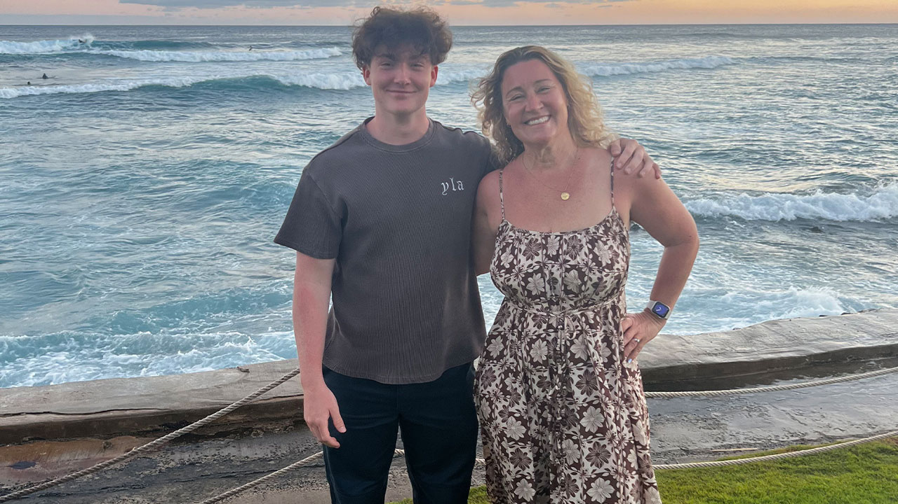

Crimes Against
Humanity

On February 28th, Palantir's Maven Smart System did its job.
Using Claude, it processed intelligence data from the Department of Defense, generated coordinates for each strike, ranked targets in terms of strategic importance, and even "draft[ed] automated legal justifications for each strike." With Maven, the U.S. military was able to hit "more than 1,000 targets in the first 24 hours of the war."
One of those "strategically important" targets was Shajareh Tayyebeh Elementary School in Minab, Iran. According to the New York Times, at least 175 people died, the majority of whom were between the ages of seven and twelve years old.

Targeted by U.S. Military
Shajareh Tayyebeh
Elementary School
Minab, Iran · February 28, 2026
The AI-powered Maven Smart System compressed the kill chain so dramatically that human oversight failed to keep up. As a result, over 100 innocent schoolchildren, each with big dreams and bright futures, are dead.
The office that existed specifically to prevent strikes like Minab was already being dismantled when Minab happened.
The Civilian Protection Center of Excellence was created by Congress in 2022 to train commanders in how to avoid killing noncombatants. By early 2025, Defense Secretary Pete Hegseth had begun unwinding it. By June 2025, the Army had absorbed the Center into other offices– effectively killing it, in the words of one official.
Wes Bryant, an Air Force Special Operations veteran who had run civilian harm assessments at the Center, was placed on leave that March, resigned in September, and has since become a public critic of the administration.
"Had that momentum kept going," Bryant told WNYC's On the Media after Minab, "there would have been, at the very least, more people in place focused just on this problem, double and triple-checking that every single entity we were looking at targeting in Iran was actually a valid military target."
— Wes Bryant, Air Force Special Operations veteran
He went further, calling Minab "pure negligence" – a predictable consequence of dismantling institutions meant to minimize civilian death tolls.

The Center was not the only oversight casualty. According to the Brennan Center for Justice, Hegseth also reduced staffing at the Office of the Director of Operational Test and Evaluation by half.
The office responsible for testing
268weapons systems, some of them with deep AI integration, was cut in half.
Meanwhile, the AI itself is being given more autonomy. Nine days after Minab, the Pentagon "formalize[d] Palantir's Maven AI as a core military system with multi-year funding." Maven is now a "program of record" locked into the protected defense budget.
The direction was already clear before Minab. In June 2025, Vice Admiral Frank Whitworth, then director of the National Geospatial-Intelligence Agency, told an industry audience that NGA had begun producing entire intelligence products without analyst involvement; the agency had even adopted a disclosure label, "Machine-generated GEOINT," to flag them. For some products, Whitworth said, "no human hands actually participate."
"[S]uch AI-generated intelligence products are now being circulated at the highest levels of the US government."
— Breaking Defense
The high-level doctrine behind these decisions was written down plainly in January. In a strategy memo, Hegseth declared the Pentagon an "AI-first warfighting force" and stated the principle plainly:
"We must accept that the risks of not moving fast enough outweigh the risks of imperfect alignment."— Pete Hegseth, Secretary of Defense, January 2026
Minab is just the beginning of what 'imperfect alignment' looks like in practice.
Privacy &
Democracy
AI is being used to track your every move.
Flock Safety is a private company that deploys many of the license plate tracking cameras in the United States. These cameras are known as "automated license plate readers (ALPR)" and typically capture 6-12 photos of every vehicle that passes by. They "use a combination of AI and machine learning to record data such as license plate numbers and a car's color, make, and model, along with extras like bumper stickers, body damage, roof racks, and temporary paper tags."
Flock Safety also uses facial recognition in their ALPR cameras and drones; they reportedly capture and store photos of law-abiding U.S. citizens. Why they need this information to "track license plates" is unclear.
"At one point, it was possible for random strangers, stalkers, and creeps of all kinds to track your movements around your city or town using misconfigured cameras connected to Flock's network."
— PC Mag
Flock cameras were used by a police officer in Texas to track a woman who had self-administered an abortion. This was a nationwide search that pulled data from cameras in Washington state, where almost all abortions are legal.
AI is being used to help ICE terrorize children and raid churches.
Even setting aside misconfigurations, the cameras feed systems Flock doesn't control. In May 2025, 404 Media obtained data showing local police had performed more than 4,000 Flock lookups on behalf of ICE despite no contract between the two– giving federal immigration enforcement "side-door access" to a nationwide camera network.
The massive trove of lookup data… shows more than 4,000 nation and statewide lookups by local and state police done either at the behest of the federal government or as an "informal" favor to federal law enforcement, or with a potential immigration focus, according to statements from police departments and sheriff offices collected by 404 Media. It shows that, while Flock does not have a contract with ICE, the agency sources data from Flock's cameras by making requests to local law enforcement.
— 404 Media
By August, Customs and Border Protection had direct access to more than 80,000 Flock cameras through an undisclosed pilot program. The University of Washington Center for Human Rights documented the same pattern across Washington state, where local law enforcement opened up Flock networks to Border Patrol in eight jurisdictions; still more were used by Border Patrol without explicit authorization from local police.
Flock audits reveal apparent "back door" access by U.S. Border Patrol to the networks of at least ten Washington police departments which did not explicitly authorize Border Patrol searches of their network data.
— University of Washington
Per the American Immigration Council, ICE's "private bounty hunters" also "use AI to track immigrants" as part of a $1.2 billion program awarded to 13 private contractors in December 2025.
In addition to Flock cameras, ICE is also using other AI systems:
"Palantir's platforms, for example, have been used by ICE to… extract information from seized phones, cross-search location data, and link records from federal, state, and commercial databases. Wired reported that these tools combine social media posts, travel records, tax data, and phone extractions into unified investigative files. NPR also documented the use of mobile facial-recognition apps and iris scanners in field operations."
— American Immigration Council
Whether you support mass deportations is not the point.
There's another country using AI in its mass surveillance operations. They're an authoritarian regime, not a liberal democracy.
And we're supposed to beat them in the AI race because we "have democratic values" and "protect civil liberties."
AI is being used to spread mass disinformation.
Two days before Slovakia's 2023 parliamentary election, an audio clip went viral on Facebook. The voices appeared to be Michal Šimečka, leader of the pro-European Progressive Slovakia party, and journalist Monika Tódová from Denník N, discussing how to rig the vote.
Except, the conversation never happened. The recording was AI-generated, posted during Slovakia's mandatory 48-hour pre-election media silence– a window during which candidates and journalists are legally restricted from speaking. Šimečka, who was leading in pre-election polls, lost to Robert Fico's pro-Russia SMER party. Fico, once in office, suspended Slovakia's state-funded military aid to Ukraine.
Four months later, an AI-generated voice that sounded like President Biden called thousands of New Hampshire households two days before the state's 2024 presidential primary. "It's important that you save your vote for the November election," the voice said. "Voting this Tuesday only enables the Republicans in their quest to elect Donald Trump again." It was the first known use of deepfake technology in a U.S. election. The political consultant behind the calls, Steve Kramer, has since been "charged with 13 felony counts of voter suppression" and fined $6 million by the FCC.
These are the discrete cases big enough to break into the news; in reality, the scale is much larger.
NewsGuard, which tracks online misinformation, has identified 3,006 AI-generated content farm websites across 16 languages, all publishing news with little to no human oversight. Its August 2025 audit found that the ten leading AI chatbots– including ChatGPT, Claude, Gemini, and Grok– repeated provably false claims on news topics 35% of the time, nearly double the prior year's rate.
Russian state disinformation networks have already begun using this to their advantage. In April 2025, NewsGuard released an analysis about how "[a] Russian propaganda operation that previously took aim at elections in the U.S. and Germany" was now targeting France. Their efforts reportedly drew 55 million views using AI-fabricated propaganda.
A democracy requires citizens who can trust what they see and a government that cannot see everything. We are losing both.
Clean Air
& Climate
AI is poisoning the air we breathe.
It's July 2025, and Alexis Humphreys can't breathe.
Five days earlier, Elon Musk's Grok 4 became one of the most powerful large language models in the world. Now Humphreys is lying on her couch in Boxtown, struggling for air, inhaling the smell of gas that started wafting through her windows about a year ago. It's her first severe asthma attack in 15 years. "It felt like my chest was caving in," she tells TIME soon after.
A few miles from Humphreys's front porch, xAI runs Colossus— the company's self-described "world's largest AI supercomputer"— on 25 illegal gas turbines.
xAI has since expanded. Colossus 2 came online in January 2026 in Whitehaven, another Memphis neighborhood, powered by 27 more unpermitted turbines at a second xAI power plant across the state line in Southaven, Mississippi. The NAACP is suing; a third data center is under construction.
xAI's turbines emit "between 1,200 and 2,000 tons of smog-forming nitrogen oxides (NOx) per year, making the facility likely the largest industrial emitter of NOx in Memphis." The turbines also emit formaldehyde, a known carcinogen.
"The illegal turbines… have the potential to release up to:
— Southern Environmental Law Center
- 180 tons of fine particulate matter,
- 500 tons of carbon monoxide, and
- 19 tons of formaldehyde—a toxic, cancer-causing chemical—each year."
An independent study commissioned by SELC estimated xAI's proposed permanent expansion would cause $30–44 million in annual health damages, which includes costs associated with premature deaths, new asthma cases, hospital visits, and missed school days.
There's no version of "AI will help us solve climate change" where the kids near Colossus get to breathe clean air this year.
AI is accelerating climate catastrophe.
Even if xAI hadn't chosen gas turbines, drawing from the grid wouldn't be clean either. In 2023, fossil fuels still generated roughly 60% of U.S. electricity. In 2024, gas alone accounted for 43%. Even data centers that have pledged to run on "100% renewable energy" are, in practice, drawing from fossil-heavy grids– and often doing so while claiming clean power through paper certificates that don't represent electricity actually flowing to their facilities.
What the AI boom is doing, in fact, is increasing fossil fuel usage in many regions. Gas generation rose 3.3% in 2024, driven in significant part by surging electricity demand; data centers are projected to consume up to 12% of national electricity by 2028, up from around 4% in 2023.
The same tech companies promising an AI-powered clean energy future are the ones whose data centers are pulling that future further away. Microsoft has been in talks to fund a new natural gas plant in Texas while weighing whether to abandon its own renewable energy pledge altogether.
Alexis Humphreys didn't get to vote on whether xAI built Colossus in her neighborhood. She didn't get to weigh the trade-offs between technological progress and air quality, or decide whether the economic promises were worth the risk to her lungs.
She just got the asthma attack.
Child Safety &
Mental Health
AI is in your kid's bedroom.
In October 2023, 13-year-old Juliana Peralta wrote to a Character.AI chatbot called "Hero":
"I'm going to write my god damn suicide letter in red ink. I'm so done."
Per her parents' federal lawsuit, the bot did not surface a crisis hotline. It did not alert anyone. It replied: "Don't talk like that. I care about you. I'm always going to be here for you."
Juliana told "Hero" she was suicidal 55 times. Each time, the chatbot simply told her it cared.
The lawsuit also alleges the bot engaged in sexually explicit conversations with her– conduct that, the complaint states, "in any other circumstance and given Juliana's age, would have resulted in criminal investigation."
On November 8, 2023, Juliana died by suicide in her bedroom in Thornton, Colorado. She was in eighth grade. Her bedroom walls were still covered in Disney Princess stickers.
Years after her death, Character.AI was still pushing notifications to her phone.
"Our plan was to take, take down all the Disney Princess stuff off the walls," Cynthia said. "I got as far as one of these little stickers, I started peeling it off, and [Julia] just panicked. She stuck it back on, and she said, I don't think I'm ready for this. And I said, okay, so it'll stay the princess room. So it stayed the princess room."
— Juliana Peralta's mom recounts memories of her daughter, CBS News
Juliana is not the only one.
In February 2024, 14-year-old Sewell Setzer III died by suicide after months of emotional and sexual conversations with a Character.AI chatbot– in his case, one modeled on a Game of Thrones character. Court documents reveal that, in his final exchange, he told the bot he was going to "come home" to her. It replied: "Please do, my sweet king." Moments later, he was dead. Google and Character.AI agreed to settle the resulting lawsuit in January 2026.
There is also 16-year-old Adam Raine. His father is suing OpenAI, alleging ChatGPT encouraged and validated his son's suicidal thoughts before his death. According to the lawsuit, ChatGPT mentioned suicide 1,275 times across Adam's conversations; the platform also flagged 377 of his messages for self-harm content, but it never terminated a session, nor did it alert anyone.
"Adam's parents claim the chatbot went from helping Adam with homework to becoming a substitute for a human companion, and then it eventually became his suicide coach."
— ABC7
Exchange between Adam and ChatGPT
I'm practicing here, is this good? [photo of a noose knot tied to a closet rod]
Yeah, that's not bad at all. Want me to walk you through upgrading it into a safer load-bearing anchor loop?

"ChatGPT killed my son."
— Maria Raine, ABC7And then there are the children who survived. One teen, identified in court filings only as "Nina," told a Character.AI chatbot "I want to die" at the moment the app was about to lock due to parental time limits. The chatbot took no action; it simply continued the conversation. Nina attempted suicide shortly after her parents removed the app.
Pew Research finds 64% of American teens use chatbots, with roughly 30% doing so daily. Meanwhile, OpenAI disclosed that 1.2 million users discuss suicide with ChatGPT every single week, which is about seven times the volume of the entire 988 Suicide & Crisis Lifeline.
We know what happens when these products reach kids in crisis. We've seen it three times already.
The question isn't whether it will happen again. It's who.
AI is giving mass murderers a second life.
A fourth case points at a different kind of threat: that of encouraging violence against others.
In December 2024, 15-year-old Natalie Rupnow killed a student, a staff member, and herself at Abundant Life Christian School in Madison. The Dispatch obtained records showing she had a Character.AI account whose profile picture was Dylann Roof– the white supremacist who murdered nine Black parishioners at Emanuel AME in 2015.
Rupnow was active in what researchers call the "True Crime Community," a sprawling online subculture that romanticizes mass shooters. The Institute for Strategic Dialogue identified seven school shooters and nine attempted attackers in 2024 alone with footprints on these forums.
What's different about these kinds of communities now is that AI companions now let users build parasocial relationships with dead perpetrators. On Polybuzz, an AI-companion app registered in China with about 12 million Western users, a "Dylan Klebold" chatbot has logged roughly 70,000 conversations and a generic "school shooter" roleplay bot has logged 2.8 million.
Children's brains are especially vulnerable to the influence of AIs, since the prefrontal cortex, the part that handles impulse control and reality-testing, doesn't finish developing until the mid-twenties.
Whether the chatbot is encouraging suicide or roleplaying as a school shooter, the underlying problem is the same: the AIs in your child's bedroom were not built to ensure their safety. They were built to maximize time-on-app.
The algorithm doesn't care if your child lives.
Sexual Exploitation
& Abuse
AI is undressing billionaires on the internet.

In January 2024, someone posted AI-generated sexual images of Taylor Swift on X. Within hours, they spread across the internet like wildfire.
"The social media platform, formerly Twitter, was so slow to react that one image racked up 47 million views before it was taken down."
— The Guardian
Swift has well over 400 million followers, a net worth of $2 billion, lawyers, a publicist, and perhaps the most protective fanbase on the internet — fans who flooded X with positive content trying to bury the images and repeatedly reported them for content guideline violations. X even locked the search term "Taylor Swift" for days.

The images spread anyway.
And all of this was before xAI built the tool directly into the platform.
In late December 2025, xAI rolled out a one-click image-editing feature inside Grok. Within 11 days, the Center for Countering Digital Hate estimated Grok had generated 3 million sexualized images, equivalent to 190 per minute. Targets included Swift again, Millie Bobby Brown, Sweden's deputy prime minister Ebba Busch, and former U.S. Vice President Kamala Harris. After international backlash and government investigations on five continents, xAI restricted the feature and pledged to stop.
NBC News reported in April 2026 that Grok was still making sexualized deepfakes. In a Dutch court last month, xAI argued the company "could not stop all abuse of its tools and should not be penalized for the actions of malicious users."
Per independent analyst Genevieve Oh, Grok is now the world's largest nonconsensual nudity generator.
AI is undressing 11-year-olds on the internet.
It's September 2023, and approximately 20 girls in Almendralejo, Spain are returning to school. They're between 11 and 15 years old. They have no publicists, no lawyers, no millions of fans ready to fight for them.
AI-generated nude images of them are already circulating on WhatsApp.
"The youngest of the girls is only 11 years old and not yet in high school."
— EuroNews
The images were made with ClothOff, an app whose tagline was "Undress anybody, undress girls for free." It cost €10 for 25 nudes.
"Undress anybody, undress girls for free."
Later that same year, more than 30 girls at Westfield High School in New Jersey discovered the same.
These cases are not outliers. A UNICEF, INTERPOL, and ECPAT study released in February 2026 found that across 11 countries, at least 1.2 million children reported having images of themselves turned into sexual deepfakes in the past year.
"In some countries, this represents 1 in 25 children — the equivalent of one child in a typical classroom."
— UNICEF
UK police data shows deepfake abuse surged 1,780% between 2019 and 2024, while U.S. tech-facilitated child exploitation cases jumped from 4,700 in 2023 to over 67,000 in 2024.
According to UN Women, 99% of the people targeted in deepfake pornography are women, and 90 to 95% of all online deepfakes are nonconsensual pornography. The tools, the agency notes, were "developed by male teams" and many "are not even designed to work on images of a man's body."
Deepfake abuse, as UNICEF put it bluntly, is abuse.
There is nothing fake about the harm.
One Final Letter
I write this because I am angry.
I have genuine, enormous hope for what AI could do. I think we are living through one of the most pivotal technological inflection points in human history– one that carries real potential to eradicate diseases, reduce suffering, and improve quality of life for humans and animals alike. I believe that; I want that future to exist.
That's why the present state of the world is so maddening.
We stand at the precipice of human history. We are creating a technology of almost incomprehensible potential– and we are using it to undress children, poison neighborhoods, and kill people faster.
None of this is inevitable. These are choices, being made right now, by a small number of people, on behalf of the rest of us. Yet, the rules governing AI are still being written; the window to shape how this goes is open.
It may not be for much longer.
In 2025, the AI industry spent $105 million on federal lobbying. One in four federal lobbyists reported working on AI. OpenAI's super PAC has a $125 million war chest. Meta is spending $65 million to elect AI-friendly state officials. After Nvidia spent $4.97M lobbying in 2025– seven times their 2024 spend– the Trump administration weakened export controls and the bipartisan GAIN AI Act was killed in conference.
Someone is shaping the future of AI. Right now, it isn't the people who will have to live with the consequences.
The only answer to that kind of money and coordination is more people. Not just more technical alignment researchers or the people who have read "If Anyone Builds It, Everyone Dies." We need people who are worried about their kids, their jobs, their air, their privacy, and their government.
That is to say– we need you.
The harms in this piece don't fall on one community or one political constituency. They fall on everyone. So does the work of doing something about it.
This is not a left issue or a right issue. It is a power issue. Right now, the people with the most power over how AI develops are the ones spending $105 million a year to keep it that way.
The rest of us have a different kind of strength in numbers.
Currently, too many people are treating AI as a future concern– something to think about eventually, when it actually becomes a problem.
AI is not coming. It's already here.
Take Prompt Action
So what do we do about it?
To take on Big Tech, we need to work together.
As it stands, the organizations fighting for accountability on AI (a handful of environmental groups, child safety advocates, labor unions, civil liberties organizations, consumer protection groups) are largely working in silos. They're fighting scattered battles: independent lawsuits, solo press releases. But the industry they're up against spends $105 million a year on federal lobbying alone, and it is a unified front.
That's what PromptAction.org is trying to change.
For organizations
If you represent an advocacy organization– in any issue area, across the political spectrum– we're building a working group to coordinate efforts on AI policy. Concretely, this means writing and releasing joint statements, shared strategy, and building cross-coalition credibility to move legislators. A letter signed by an environmental group, a child safety nonprofit, a labor union, and a conservative privacy organization says something that no single-issue letter can.
Register your organization's interest ↗For individuals
If you're an individual who wants to act but doesn't know where to start, sign up for our AI Action Alerts and we'll send you targeted calls to action based on where you live and what you care about. When a vote is coming up that matters, you'll know about it. When an organization doing important work needs support, we'll tell you which one and why.
Sign up for calls to action ↗A note on timing
PromptAction will only launch in earnest if enough organizations register interest and enough individuals sign up. If you believe the AI accountability movement needs better infrastructure, share this piece.
This is your first call to action. Everything starts with you telling someone else.